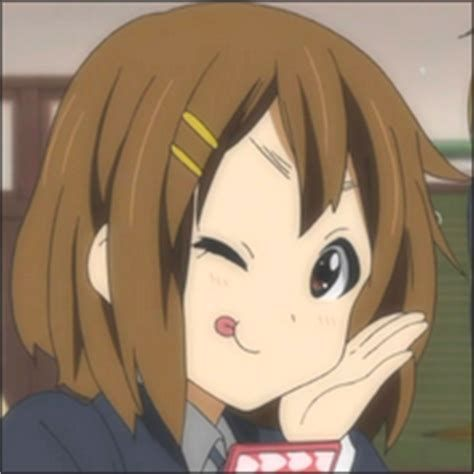
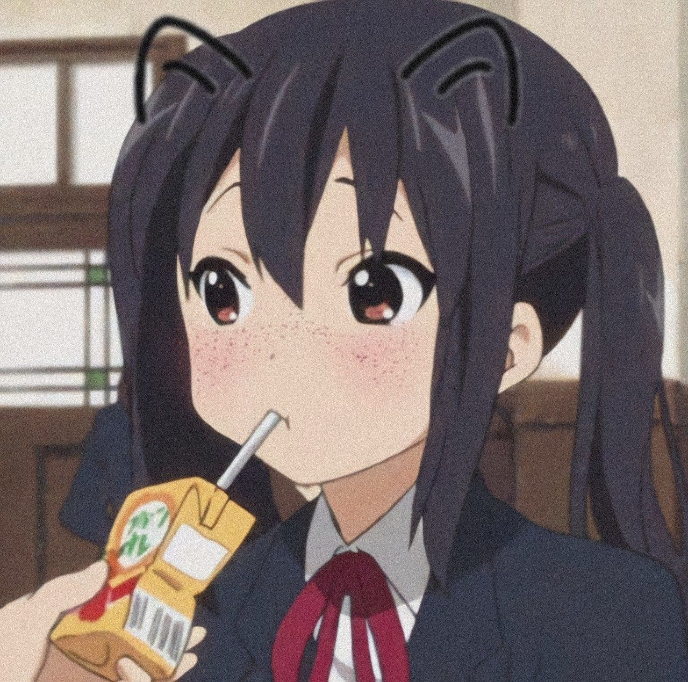
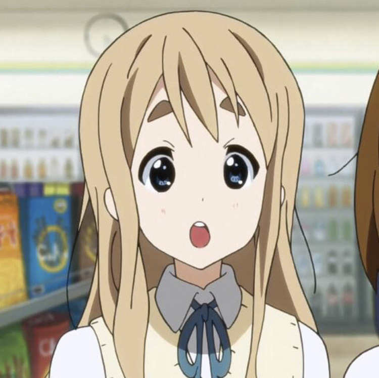

Character: Yui HirasawaAnime: K-on!

Character: Azusa NakanoAnime: K-on!

Character: Azusa NakanoAnime: K-on!
Tsumugi Kotobuki (琴吹紬), otherwise known as Mugi (むぎ) is one of the 5 main characters in K-ON!